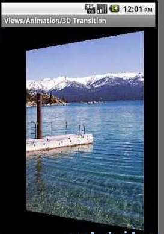

Android 动画分析之翻转效果
大家一定看到过三维的翻转效果，所以今天在这里简单的给大家分析一下，我们怎么样才能实现Android中的翻转动画效果的实现，首先看一下运行效果如下图所示。
效果图：

Android中并没有提供直接做3D翻转的动画，所以关于3D翻转的动画效果需要我们自己实现，那么我们首先来分析一下Animation 和 Transformation。
Animation动画的主要接口，其中主要定义了动画的一些属性比如开始时间，持续时间，是否重复播放等等。而Transformation中则包含一个矩阵和alpha值，矩阵是用来做平移，旋转和缩放动画的，而alpha值是用来做alpha动画的，要实现3D旋转动画我们需要继承自Animation类来实现，我们需要重载getTransformation和applyTransformation，在getTransformation中Animation会根据动画的属性来产生一系列的差值点，然后将这些差值点传给applyTransformation，这个函数将根据这些点来生成不同的Transformation。下面是具体实现：
public class Rotate3dAnimation extends Animation { // 开始角度
private final float mFromDegrees;
// 结束角度
private final float mToDegrees;
// 中心点
private final float mCenterX;
private final float mCenterY;
private final float mDepthZ;
// 是否需要扭曲
private final boolean mReverse;
// 摄像头
private Camera mCamera;
public Rotate3dAnimation(float fromDegrees, float toDegrees, float centerX,
float centerY, float depthZ, boolean reverse) {
mFromDegrees = fromDegrees;
mToDegrees = toDegrees;
mCenterX = centerX;
mCenterY = centerY;
mDepthZ = depthZ;
mReverse = reverse;
}
@Override
public void initialize(int width, int height, int parentWidth,
int parentHeight) {
super.initialize(width, height, parentWidth, parentHeight);
mCamera = new Camera();
}
// 生成Transformation
@Override
protected void applyTransformation(float interpolatedTime, Transformation t) {
final float fromDegrees = mFromDegrees;
// 生成中间角度
float degrees = fromDegrees + ((mToDegrees - fromDegrees) * interpolatedTime);
final float centerX = mCenterX;
final float centerY = mCenterY;
final Camera camera = mCamera;
final Matrix matrix = t.getMatrix();
camera.save();
if (mReverse) {
camera.translate(0.0f, 0.0f, mDepthZ * interpolatedTime);
} else {
camera.translate(0.0f, 0.0f, mDepthZ * (1.0f - interpolatedTime));
}
camera.rotateY(degrees);
// 取得变换后的矩阵
camera.getMatrix(matrix);
camera.restore();
matrix.preTranslate(-centerX, -centerY);
matrix.postTranslate(centerX, centerY);
}
}
其中包括了旋转的开始和结束角度，中心点、是否扭曲、和一个Camera，这里我们主要分析applyTransformation函数，其中第一个参数就是通过getTransformation函数传递的差指点，然后我们根据这个差值通过线性差值算法计算出一个中间角度degrees，Camera类是用来实现绕Y轴旋转后透视投影的，因此我们首先通过t.getMatrix()取得当前的矩阵，然后通过camera.translate来对矩阵进行平移变换操作，camera.rotateY进行旋转。这样我们就可以很轻松的实现3D旋转效果了，该例子的原意是通过一个列表来供用户选择要实现翻转的图像，所以我们分析至少需要定义两个控件：ListView和ImageView（要翻转的图像），主界面的xml布局定义如下所示。
<FrameLayout xmlns:android="http://schemas.android.com/apk/res/androidandroid:id="@+id/container
android:layout_width="match_parent
android:layout_height="match_parent" >
<ListView
android:id="@android:id/list
android:layout_width="match_parent
android:layout_height="match_parent
android:layoutAnimation="@anim/layout_bottom_to_top_slide
android:persistentDrawingCache="animation|scrolling" />
<ImageView
android:id="@+id/picture
android:layout_width="match_parent
android:layout_height="match_parent
android:scaleType="fitCenter
android:visibility="gone" />
</FrameLayout>
然后准备好需要的资源，在onCreate函数中准备好ListView和ImageView，因为要旋转所以我们需要保存视图的缓存信息，通过setPersistentDrawingCache(ViewGroup.PERSISTENT_ANIMATION_CACHE);可以设置该功能，当我们选择列表中的图像资源后在onItemClick中将选择的资源Id对应的图像设置到ImageView中，然后通过applyRotation来启动一个动画，前面有了Rotate3dAnimation的实现，我们要完成3D翻转动画就很简单，直接构建一个Rotate3dAnimation对象，设置其属性（包括动画监听），这里将动画的监听设置为DisplayNextView，可以用来显示下一个视图，在其中的动画结束监听（onAnimationEnd）中，通过一个县城SwapViews来交换两个画面，交换过程则是设置ImageView和ListView的显示相关属性，并构建一个Rotate3dAnimation对象，对另一个界面进行旋转即可，然后启动动画，整个转换过程实际上就是将第一个界面从0度转好90度，然后就爱你过第二个界面从90度转到0度，这样就形成了一个翻转动画，完整代码如下，我们也加入了一些必要的注解。
public class Transition3d extends Activity implementsAdapterView.OnItemClickListener, View.OnClickListener {
// 照片列表
private ListView mPhotosList;
private ViewGroup mContainer;
private ImageView mImageView;
// 照片的名字，用于显示在list中
private static final String[] PHOTOS_NAMES = new String[] { "Lyon",
"Livermore", "Tahoe Pier", "Lake Tahoe", "Grand Canyon", "Bodie" };
// 资源id
private static final int[] PHOTOS_RESOURCES = new int[] {
R.drawable.photo1, R.drawable.photo2, R.drawable.photo3,
R.drawable.photo4, R.drawable.photo5, R.drawable.photo6 };
@Override
protected void onCreate(Bundle savedInstanceState) {
super.onCreate(savedInstanceState);
setContentView(R.layout.animations_main_screen);
mPhotosList = (ListView) findViewById(android.R.id.list);
mImageView = (ImageView) findViewById(R.id.picture);
mContainer = (ViewGroup) findViewById(R.id.container);
// 准备ListView
final ArrayAdapter<String> adapter = new ArrayAdapter<String>(this,
android.R.layout.simple_list_item_1, PHOTOS_NAMES);
mPhotosList.setAdapter(adapter);
mPhotosList.setOnItemClickListener(this);
// 准备ImageView
mImageView.setClickable(true);
mImageView.setFocusable(true);
mImageView.setOnClickListener(this);
// 设置需要保存缓存
mContainer.setPersistentDrawingCache(ViewGroup.PERSISTENT_ANIMATION_CACHE);
}
/**
* Setup a new 3D rotation on the container view.
* @param position
* the item that was clicked to show a picture, or -1 to show the
* list
* @param start
* the start angle at which the rotation must begin
* @param end
* the end angle of the rotation
*/
private void applyRotation(int position, float start, float end) {
// 计算中心点
final float centerX = mContainer.getWidth() / 2.0f;
final float centerY = mContainer.getHeight() / 2.0f;
// Create a new 3D rotation with the supplied parameter
// The animation listener is used to trigger the next animation
final Rotate3dAnimation rotation = new Rotate3dAnimation(start, end,
centerX, centerY, 310.0f, true);
rotation.setDuration(500);
rotation.setFillAfter(true);
rotation.setInterpolator(new AccelerateInterpolator());
// 设置监听
rotation.setAnimationListener(new DisplayNextView(position));
mContainer.startAnimation(rotation);
}
public void onItemClick(AdapterView parent, View v, int position, long id) {
// 设置ImageView
mImageView.setImageResource(PHOTOS_RESOURCES[position]);
applyRotation(position, 0, 90);
}
// 点击图像时，返回listview
public void onClick(View v) {
applyRotation(-1, 180, 90);
}
/**
* This class listens for the end of the first half of the animation. It
* then posts a new action that effectively swaps the views when the
* container is rotated 90 degrees and thus invisible.
*/
private final class DisplayNextView implements Animation.AnimationListener {
private final int mPosition;
private DisplayNextView(int position) {
mPosition = position;
}
public void onAnimationStart(Animation animation) {
}
// 动画结束
public void onAnimationEnd(Animation animation) {
mContainer.post(new SwapViews(mPosition));
}
public void onAnimationRepeat(Animation animation) {
}
}
/**
* This class is responsible for swapping the views and start the second
* half of the animation.
*/
private final class SwapViews implements Runnable {
private final int mPosition;
public SwapViews(int position) {
mPosition = position;
}
public void run() {
final float centerX = mContainer.getWidth() / 2.0f;
final float centerY = mContainer.getHeight() / 2.0f;
Rotate3dAnimation rotation;
if (mPosition > -1) {
// 显示ImageView
mPhotosList.setVisibility(View.GONE);
mImageView.setVisibility(View.VISIBLE);
mImageView.requestFocus();
rotation = new Rotate3dAnimation(90, 180, centerX, centerY, 310.0f, false);
} else {
// 返回listview
mImageView.setVisibility(View.GONE);
mPhotosList.setVisibility(View.VISIBLE);
mPhotosList.requestFocus();
rotation = new Rotate3dAnimation(90, 0, centerX, centerY, 310.0f, false);
}
rotation.setDuration(500);
rotation.setFillAfter(true);
rotation.setInterpolator(new DecelerateInterpolator());
// 开始动画
mContainer.startAnimation(rotation);
}
}
}